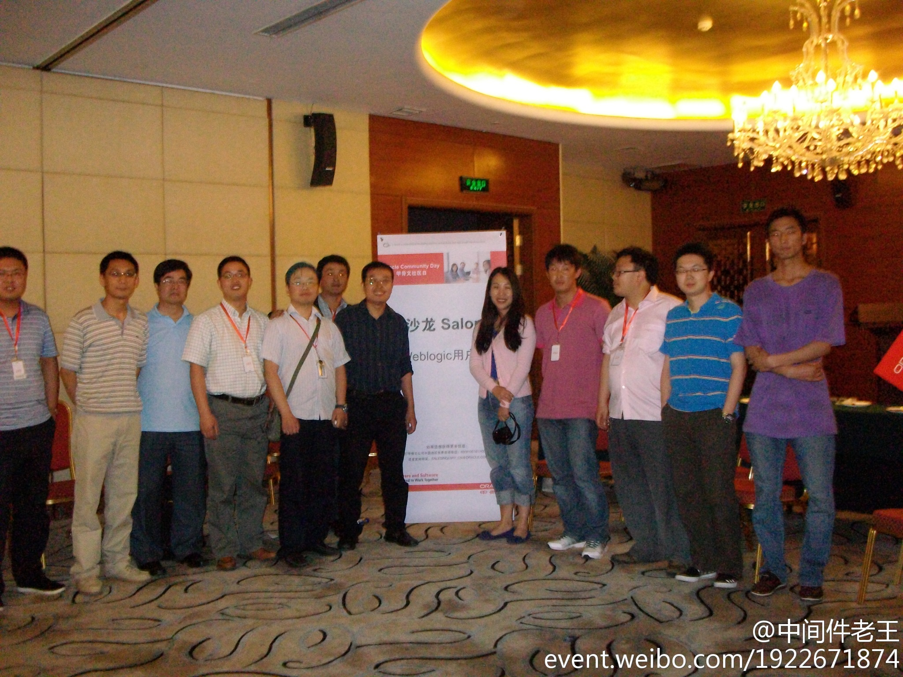

//@Deepb1ue:欢迎//@王立仁是光头汉: 有可能的话，我也分享下网络虚拟化的内容，有一点浅见拿出来让大家拍砖。。//@Deepb1ue: 还有两位C3粉没来得及分享，等下个月亮相！ @周磊BJ @程显峰-Mars@仁兄_王立仁:#C3沙龙# 感谢@Deepb1ue 的组织和风趣的主持，感谢两位讲师的阐述，收益颇多。第一次见到@Ada李力 , 以及更多的朋友，觉得很开心。
不要一个人吃饭，尤其是工作日午餐。//@CSDN魏兵: 饭局吐槽有益身心健康。@包研Ant:#午间饭局吐槽# 增加了沟通，延伸的人脉，放松了心情，排除了疑惑，明确了方向，专注了工作，百利无一害哇 @CSDN魏兵 @Ada李力
一场活动，除了技术，内容，社区和业务方面的作用，还会有意外收获，比如说吧，昨天的#C3沙龙#就有个参会的妹妹说想应聘@CSDN 的云计算编辑，@刘江总编 正好在现场，顺便就聊了聊。半夜小姑娘就把正式简历发到邮箱了。
这么老的照片都找出来了，最近是有什么活动吗？为了上海的JavaOne大会？@中间件老王:#Java时刻# 2011-05-14，第一次WebLogic User Group合影留念，再次感谢 @Ada李力 对我们的帮助 地址：网页链接 
姣姣游泳班教练建了个微信群，里面的家长非常活跃，因为教练时不时发些孩子们训练的照片，家长除了远程观赏自己娃儿，还可以监控孩子有没有到岗。因为游泳馆在校内，孩子们自行从教室走去参加训练，真有不少逃课的孩子呢。